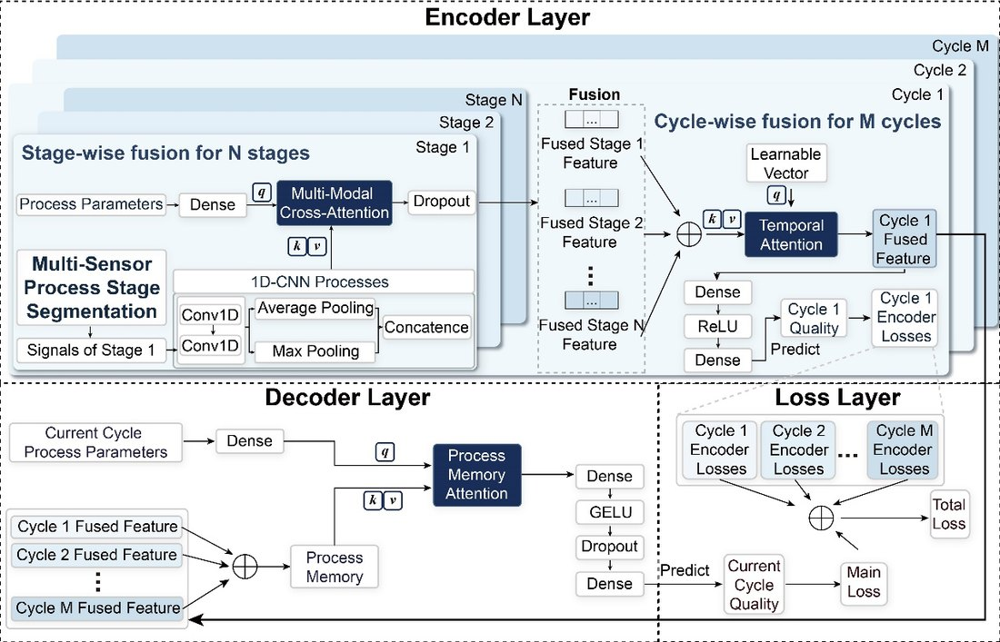
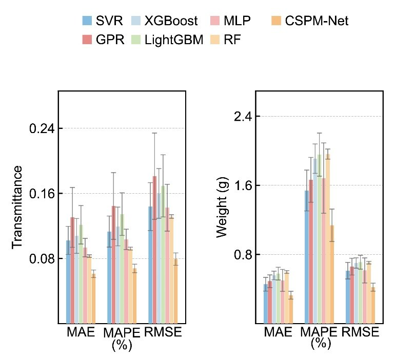
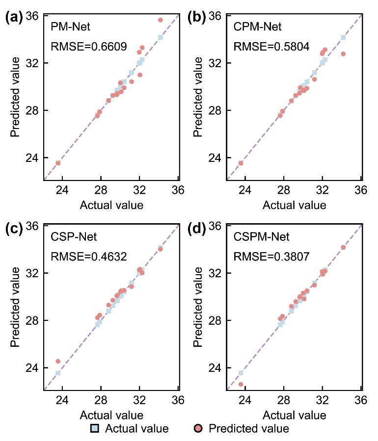

生产前产品质量智能预测（CSPM-Net）Pre-production Quality Prediction (CSPM-Net)
针对“开机前只有工艺参数、没有当前批次传感器数据时如何预测产品质量”的难题，提出跨模态阶段感知过程记忆网络 CSPM-Net：把历史批次的丰富传感器知识压缩成“可被参数查询的记忆表示”，新批次仅凭参数设定即可检索相关传感器派生知识做生产前(pre-cycle)质量预测；PC 数据集透光率/重量 RMSE 较最强基线分别降 36.3% / 22.1%，PMMA 数据集进一步验证一致提升。For the problem of predicting quality before startup—when only the planned parameters exist and current-cycle sensor data is unavailable—CSPM-Net (a cross-modal, stage-aware process-memory network) compresses rich historical sensor knowledge into a parameter-queryable memory, so a new batch can retrieve relevant sensor-derived knowledge for pre-cycle quality prediction; on PC datasets it cuts transmittance/weight RMSE by 36.3% / 22.1% vs. the strongest baseline, confirmed on PMMA.
背景Background
多相批次制造中质检存在大时延、无法实时反馈；开机前缺当前周期传感器数据，只能依靠历史数据提前预测质量。In multiphase batch manufacturing, inspection lags and gives no real-time feedback; before startup there is no current-cycle sensor data, so prediction must rely on historical data.
方法 / 我的工作Method / My Work
- 把历史批次的传感器知识压缩为“可被参数查询”的过程记忆表示。Compress historical sensor knowledge into a parameter-queryable process-memory representation.
- 用动态规划做工艺阶段分段，区分不同阶段的过程模式。Segment process phases via dynamic programming to separate per-stage patterns.
- 用时序注意力 + 交叉注意力实现“仅凭参数”的开机前质量预测。Use temporal + cross attention for parameter-only, pre-cycle quality prediction.
结果Results
- PC 数据集透光率/重量 RMSE 较最强基线降 36.3% / 22.1%；PMMA 一致提升。On PC, transmittance/weight RMSE down 36.3% / 22.1% vs. the best baseline; consistent gains on PMMA.
- 推荐参数在物理优化实验中产出接近目标的质量。Recommended parameters yield near-target quality in physical optimization experiments.
- 一作 SCI（AEI，IF 9.9，审稿中）+ 国家发明专利（已受理）。First-author SCI (AEI, IF 9.9, under review) + national patent (accepted).
图片Figures



本人角色：第一作者，主导方法设计、软件实现与实验；代码已开源（GitHub: JamaicaBoy/cspm-net）。My role: first author, leading the method, implementation and experiments; open-sourced (GitHub: JamaicaBoy/cspm-net).